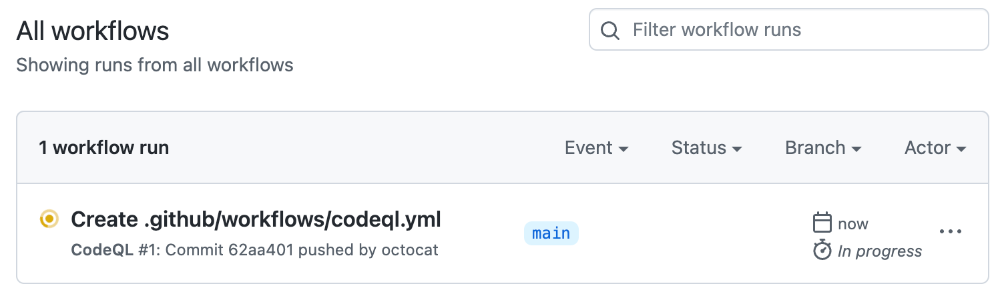
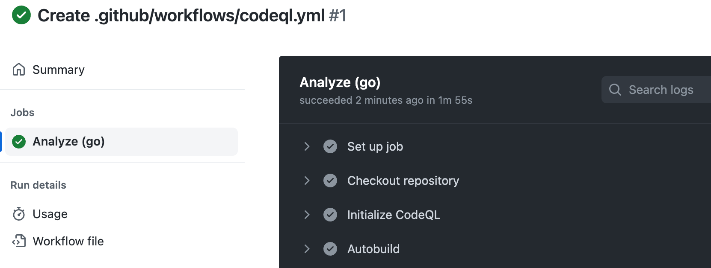

Under your repository name, click Actions.

You'll see a list that includes an entry for running the code scanning workflow. The text of the entry is the title you gave your commit message.

Click the entry for the code scanning workflow.
Note
If you are looking for the CodeQL workflow run triggered by enabling default setup, the text of the entry is "CodeQL."
Click the job name on the left. For example, Analyze (LANGUAGE).

Review the logging output from the actions in this workflow as they run.
Optionally, to see more detail about the commit that triggered the workflow run, click the short commit hash. The short commit hash is 7 lowercase characters immediately following the commit author's username.
Once all jobs are complete, you can view the details of any code scanning alerts that were identified. For more information, see Assessing code scanning alerts for your repository.